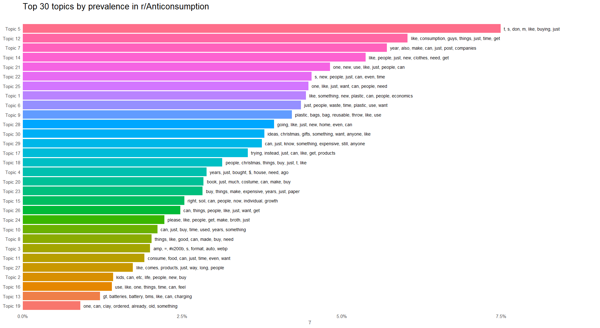

Triangulating Resource Conservation Movements in Digital Spaces: Topic Modeling and Rhetorical Constellations on r/Anticonsumption
Abstract
In this project, I created a structured topic model (STM) of posts on r/Anticonsumption that revealed common threads of discussion, then performed rhetorical constellation analysis on and between the 30 topics. My goal was to define this movement based on its shared language practices. I found that r/Anticonsumption represents a community focused on diminishing consumerist tendencies, financial conservativism, and a feeling-based relationship to their external and internal environments.
Introduction
What are users of the r/Anticonsumption space talking about? I want to learn about this community’s motivations, goals, joys, and anxieties, as well as in what climate contexts they see themselves situated (e.g., anthropocene, eremocene, state-guided versus corporate capitalism, neoliberalism, technological takeover). An additional component of this inquiry is defining the anticonsumption movement in general. The movement is relatively new and lacks a reliable definition (Lee 2022; Makri et al. 2020). STM and rhetorical constellation analysis can lend insight into the anticonsumption movement by better defining its character and goals, as well as addressing my question of how the community is situated in climate change discourse.
Methodology
I performed STM on threads posted to r/Anticonsumption within the past month. This yielded 971 items with 7 variables. To first scrape the necessary data from r/Anticonsumption and prepare the data for exploration, I used a YouTube tutorial from James Cook (2023).
After scraping, I tested and trained topic models using a variety of K values ranging from K = 5 (K5) to K = 70 (K70). This included producing summaries of each topic in K = n (Kn) including the terms with highest probability to appear in posts within a given topic (“Highest Prob”) and the terms most frequent and exclusive to each topic (FREX). Code for this part of the process was provided by Dan Card (2023). The Kn with greatest commonality between topics’ Highest Prob and FREX terms was K30. Therefore, I elected to perform close reading and qualitative analysis on K30 topics. For this, I used code provided by Dan Card (2023) and Julia Silge (2018).
Finally, my manual qualitative analysis was inspired by the rhetorical constellation method demonstrated by Tillery and Bloomfield (2022). Their definition of “prominences” within a given discourse as nodes of conversation that create a “constellation” inspired my coding practice for the close reading portion of my analysis. Tillery and Bloomfield also aim to discern the political ideologies underlying subsets of their data, and position various comments and therefore prominences somewhere on a “left” to “right” political spectrum. Since my aim was to definitionally describe r/Anticonsumption discourse, I did not pursue this ideologizing effort.
My Code
Phase 1a: Scraping r/Anticonsumption - James Cook (2023)
```{r}
# get data
install.packages("RedditExtractoR")
install.packages("kableExtra")
library(RedditExtractoR)
library(kableExtra)
# scrape r/Anticonsumption for threads
ac_threads <- find_thread_urls(subreddit = "Anticonsumption", sort_by = "new")
head(ac_threads, 3) %>%
kbl()
```Phase 1a Inputs, Outputs, and Errors
Phase 1a was the quickest and smoothest step in this research. I ran into no errors or sticking points with the code, and it worked just as well upon rerun. I gathered all thread-starting posts (sans comments) from the past month which included 971 objects of 7 variables, which looks about right.
Phase 1b: Preparing Data - Dan Card (2023)
```{r}
# create and read in CSV
library(dplyr)
write.csv(ac_threads, "data/ac_threads.csv")
read.csv("data/ac_threads.csv")
# clean data
library(janitor)
library(tidyverse)
ac_threads <- clean_names(ac_threads)
glimpse(ac_threads)
ac_threads <- ac_threads %>%
select(title,
text,
comments)
glimpse(ac_threads)
# create corpus
library(quanteda)
library(quanteda.dictionaries)
library(quanteda.textmodels)
library(quanteda.textplots)
library(quanteda.textstats)
library(readtext)
library(spacyr)
library(tidyverse)
thread_corp <- corpus(ac_threads, text_field = "text")
# tokenize the corpus
thread_tokens <- tokens(thread_corp, remove_punct = TRUE, remove_separators = TRUE, remove_numbers = TRUE)
thread_tokens
# remove stop words
head(stopwords("en"), 50)
thread_tokens_nostop <- thread_tokens %>% tokens_remove(stopwords("en"))
tidy_threads_dfm <- dfm(thread_tokens_nostop)
```Phase 1b Inputs, Outputs, and Errors
Text
Phase 2: Testing and Training Models to Find Kn - Dan Card (2023)
```{r}
library(dplyr)
library(tidyr)
library(stringr)
library(tidytext)
library(stm)
# convert dfm to stm - Dan Card (2023)
library(stm)
dfm_stm <- convert(tidy_threads_dfm, to = "stm")
# model K5
model_K5 <- stm(documents = dfm_stm$documents,
vocab = dfm_stm$vocab,
K = 10,
verbose = TRUE)
plot(model_K5)
summary(model_K5)
# repeat for K10
model_K10 <- stm(documents = dfm_stm$documents,
vocab = dfm_stm$vocab,
K = 10,
verbose = TRUE)
plot(model_K10)
summary(model_K10)
# K20
model_K20 <- stm(documents = dfm_stm$documents,
vocab = dfm_stm$vocab,
K = 20,
verbose = TRUE)
plot(model_K20)
summary(model_K20)
# K30
model_K30 <- stm(documents = dfm_stm$documents,
vocab = dfm_stm$vocab,
K = 30,
verbose = TRUE)
plot(model_K30)
summary(model_K30)
# K40
model_K40 <- stm(documents = dfm_stm$documents,
vocab = dfm_stm$vocab,
K = 40,
verbose = TRUE)
plot(model_K40)
summary(model_K40)
# K50
model_K50 <- stm(documents = dfm_stm$documents,
vocab = dfm_stm$vocab,
K = 50,
verbose = TRUE)
plot(model_K50)
summary(model_K50)
```Phase 2 Inputs, Outputs, and Errors
I ran into a problem with running parallel tests for ideal K-values, i.e., Julia Silge’s code for model diagnostics by number of topics. I was unable to produce visuals showing held-out likelihood, lower bound, residuals, and semantic coherence for multiple K-values. To move forward, I simply re-ran a chunk of functional, well-understood code for each K-value I wished to explore as shown above.
The plot and summary functions following each iteration yielded visuals shown here (externally linked doc). Based on the commonalities between Highest Prob terms and FREX terms as well as researcher-observed semantic coherence of topics between all explored Kn, I elected to further explore K20 and K30.
Phase 3: Modeling K20 and K30 to Determine Final Kn- Julia Silge (2018)
```{r}
# exploring topics approaching ideal Kn
# beta: highest word probabilities for each topic
# K20
k20_beta <- tidy(model_K20)
k20_beta %>%
group_by(topic) %>%
top_n(10, beta) %>%
ungroup() %>%
mutate(topic = paste0("Topic ", topic),
term = reorder_within(term, beta, topic)) %>%
ggplot(aes(term, beta, fill = as.factor(topic))) +
geom_col(alpha = 0.8, show.legend = FALSE) +
facet_wrap(~ topic, scales = "free_y") +
coord_flip() +
scale_x_reordered() +
labs(x = NULL, y = expression(beta),
title = "Highest word probabilities for each topic",
subtitle = " ")
# K30
k30_beta <- tidy(model_K30)
k30_beta %>%
group_by(topic) %>%
top_n(10, beta) %>%
ungroup() %>%
mutate(topic = paste0("Topic ", topic),
term = reorder_within(term, beta, topic)) %>%
ggplot(aes(term, beta, fill = as.factor(topic))) +
geom_col(alpha = 0.8, show.legend = FALSE) +
facet_wrap(~ topic, scales = "free_y") +
coord_flip() +
scale_x_reordered() +
labs(x = NULL, y = expression(beta),
title = "Highest word probabilities for each topic",
subtitle = " ")
# gamma: probabilities that each doc is generated from each topic
# K20
k20_gamma <- tidy(model_K20, matrix = "gamma",
document_names = rownames(tidy_threads_dfm))
# K30
k30_gamma <- tidy(model_K30, matrix = "gamma",
document_names = rownames(tidy_threads_dfm))
# visual for k20
install.packages("scales")
library(scales)
library(ggthemes)
top_terms_k20 <- k20_beta %>%
arrange(beta) %>%
group_by(topic) %>%
top_n(7, beta) %>%
arrange(-beta) %>%
select(topic, term) %>%
summarise(terms = list(term)) %>%
mutate(terms = map(terms, paste, collapse = ", ")) %>%
unnest(cols = c(terms))
gamma_terms_k20 <- k20_gamma %>%
group_by(topic) %>%
summarise(gamma = mean(gamma)) %>%
arrange(desc(gamma)) %>%
left_join(top_terms, by = "topic") %>%
mutate(topic = paste0("Topic ", topic),
topic = reorder(topic, gamma))
gamma_terms_k20 %>%
top_n(20, gamma) %>%
ggplot(aes(topic, gamma, label = terms, fill = topic)) +
geom_col(show.legend = FALSE) +
geom_text(hjust = 0, nudge_y = 0.0005, size = 3,
family = "IBMPlexSans") +
coord_flip() +
scale_y_continuous(expand = c(0,0),
limits = c(0, 0.09),
labels = scales::label_percent()) +
theme_tufte(base_family = "IBMPlexSans", ticks = FALSE) +
theme(plot.title = element_text(size = 16,
family="IBMPlexSans-Bold"),
plot.subtitle = element_text(size = 13)) +
labs(x = NULL, y = expression(gamma),
title = "Top 20 topics by prevalence in r/Anticonsumption",
subtitle = " ")
# visual for k30
top_terms_l30 <- k30_beta %>%
arrange(beta) %>%
group_by(topic) %>%
top_n(7, beta) %>%
arrange(-beta) %>%
select(topic, term) %>%
summarise(terms = list(term)) %>%
mutate(terms = map(terms, paste, collapse = ", ")) %>%
unnest(cols = c(terms))
gamma_terms_k30 <- k30_gamma %>%
group_by(topic) %>%
summarise(gamma = mean(gamma)) %>%
arrange(desc(gamma)) %>%
left_join(top_terms, by = "topic") %>%
mutate(topic = paste0("Topic ", topic),
topic = reorder(topic, gamma))
gamma_terms_k30 %>%
top_n(30, gamma) %>%
ggplot(aes(topic, gamma, label = terms, fill = topic)) +
geom_col(show.legend = FALSE) +
geom_text(hjust = 0, nudge_y = 0.0005, size = 3,
family = "IBMPlexSans") +
coord_flip() +
scale_y_continuous(expand = c(0,0),
limits = c(0, 0.09),
labels = scales::label_percent()) +
theme_tufte(base_family = "IBMPlexSans", ticks = FALSE) +
theme(plot.title = element_text(size = 16,
family="IBMPlexSans-Bold"),
plot.subtitle = element_text(size = 13)) +
labs(x = NULL, y = expression(gamma),
title = "Top 30 topics by prevalence in r/Anticonsumption",
subtitle = " ")
```Phase 3 Inputs, Outputs, and Errors
These plots list more top terms per topic than the previous ones and offer clearer visualization of the topic proportions. As I compared K20 and K30 using these visuals, it became clear that K30 offered greater semantic coherence within each topic as well as across groups of topics which featured overlapping top words. A key signifier of coherence was my personal response of follow-up question asking when observing K30 topics versus definitional confusion while looking through K20 topics.
After this phase, I proceeded to analyze topics under K30 using manual qualitative methods.

Phase 4: Rhetorical Constellating on K30 - Tillery & Bloomfield (2022)
Phase 4 Inputs
Identifying Nodes, or “Prominences”
My first step in engaging with STM results on a deeper level was identifying what type of phenomenon to look for. Reviewing Tillery and Bloomfield’s methods clarified that the point of their analyses were discerning “prominence”: “discursive frequency, but, in another way, prominence can be understood as the driving force and logics undergirding discursive formations and patterns.” (p. 357). Using this definition I searched my CSV file for individual terms which frequently appeared as both Highest Prob and FREX terms in K30 topics. I performed a close read of the surrounding text lines and noted the common language practices, themes of contemplation or questioning, threads of concern, and common objects, people, and relationship mentioned in those surrounding lines of text.
Creating a Constellation
Finding connections between different prominences required (1) identifying terms with the most authority in each prominence; (2) defining those authoritative terms based on their textual context; and (3) forming a “prominence identity” which addressed the contextualized meaning of each collection of authoritative terms. Mapping these rhetorical constellations required background knowledge on contemporary concerns related to climate change response, and was significantly informed by my knowledge of resource conservation movements related to anti-consumption such as anti-consumerism, minimalism, self-sustainability, simple living, slow living, slow food, and anti-capitalism.
Phase 4 Outputs
The Prominences
Us versus them. Signaled by topic term “people.” I also searched my CSV for “everyone,” “family,” “friends,” “coworkers,” “parents,” “folks,” and “folx.”
The posts including these terms identified a group of people ranging from broad (“people”) to specific (“parents at my kids’ school”), and described a relationship between said group and the individual user. Most often, users were expressing frustration, exasperation, and confusion about others’ actions and how the user should respond to them. In some instances, the relationships were remarkably complex and large scale. One user expresses frustration at “progressive people” who accept the notion that “nobody is allowed to question the desirability of growth,” and they solicit opinions on this “fundamental growth imperative” central to consumerist culture. In other instances, the relationships are simple yet highly impactful, such as the tension (animosity, even) between folx who use rechargeable vape pens with cartridges versus single-use self-contained apparatuses.
Home as site of choice making. Signaled by topic terms indicating home and personal-domain-related nouns or verbs, such as “house,” “garden,” “clothes,” and “gifts.”
Posts which included these terms were most often descriptions of habit-changing and seeking advice on how to alter one’s consumption practices in and around the home, and complaints about others’ use of disposable goods in their everyday life. Users asked for advice on greening their yards and gardens, making their home more energy efficient, reducing food waste, refurbishing different areas of the home, and making personal products last longer.
Childcare. Signaled by topic term “kids.” I also searched for “child-.”
This prominence initially began as part of “Home as site of choice making,” but after seeing how extensively users covered this topic, became one of its own. Posts concerning childcare were often lengthy, and described a variety of concerns about others’ children and the user’s own. Many users expressed fear that kids have no control over learning patterns of overconsumption, and a sense of helplessness when it came to imagining the environments (physical and social) their kids would inherit and co-create. Some posts also involved discussion of how to teach one’s kids the meaning of sustainability and how to demonstrate it as a parent. Many posts included notes on clothing repair, cooking meals, reusing holiday and birthday decorations, alternative transportation (e.g., biking or walking), using cloth napkins, planting rain gardens, and involving kids in taking care of the home.
Conservation and avoidance of particular materials. Signaled by topic terms “plastic,” “gas,” “paper,” “soil,” and “food.”
Posts mentioning a specific resource almost always focused entirely on the user reducing their consumption of that material whether in effort to conserve it (as in the case of “food,” e.g.) or not contribute to its production (as with “plastic,” e.g.). Where “food” is mentioned, users describe ways to track household consumption and waste, consuming less meat toward water conservation, feeding pets, and buying food items wrapped up in less plastic. On that note, where “plastic” is mentioned, the surrounding text is directly related to eliminating the user’s dependency on plastic. Users note thrifting cloth tote bags, reusing Halloween decorations, finding replacements for Ziplock bags, buying plastic-free makeup, or convincing their barista to use their travel mug instead of a disposable coffee cup.
The industrial antagonist. Signaled by topic terms describing dominating cultural structures such as “companies,” “consumption,” “economics,” “christmas,” and “expensive.” I also searched for “holiday,” “tech,” and “politic-.”
Overall, posts including these terms were criticizing corporate culture, choices make by corporations and governments, the allure of delivery services, online megastores, big brands, and traditions such as holidays. Many users describe feeling inundated with pressure to overtly celebrate holidays with material goods, pressure to use Amazon Prime, to keep their digital devices up to date, and to place anticonsumption at the forefront of their political identity.
Conclusion
Overall, r/Anticonsumption is a community whose constituents position themselves in opposition to the industrialized world around them, often with undertones of moral discord. Within the community, they often seek and share advice about altering home space, home practices, and daily habits toward a generally decreased consumption of goods. The partial constellation I was able to produce from the data yielded five prominences or nodes. Each prominence represents a collection of commonplace understandings and beliefs about one’s relationship to Others, including one’s material surroundings and resources as well as the immaterial yet perceivable environment including politics and emotions.
Reflection
Coding Choices
If I could do this project again on r/Anticonsumption, I would prefer to perform STM using not only single words, but also concordance and collocates in order to add detail and most likely accuracy to the topics yielded. I would also like to explore user posts that are explicitly linked to a certain topic(s) in order to better analyze them for meaning. Another way to rigorize my findings would be to explore the content of complete comment data per thread. There is rich conversation here, and a lot of it. On this or a different set of texts in a separate project, I also want to try using the stminsights ShinyApp for more variable, nuanced, and dynamic visualizations (of topics and an actual representation of a rhetorical “constellation”).
My Research
In the broader context of my personal research interests, this project (1) offers signposts to subjects, methods, and scholars who are interesting to me; (2) has served as a practical foundation for STM and rhetorical constellating from which to build my methodological skills; (3) and acts as a small square of landscape in the gargantuan ecology of climate change discourse communities who coalesce in digital spaces.
Personal Impact
On a more personal note, this project meant a lot to me. I have never coded before in my life, and found it extremely challenging to pivot my problem-solving inclinations from “re/craft a path to arrive at a better conclusion, and leave annotations to edit later” to “find the specific error now and seek a workable solution that fits the code I have already run thus far.” This was excruciating and rewarding in equal parts, not in the least because I have gleaned a more proactive and act-now attitude when encountering troubles in other forms of project and research. I have also developed a durability when it comes to encountering “Error”s and “Warning”s—I no longer fear them, and even have a small toolkit of my own that can help me seek solutions.
Ultimately, completing this work and sharing it with my peers while also hearing about their own coding efforts and insights had a remarkable effect on my self-assuredness and centeredness. As a first-semester-EVER graduate student, I often feel insecure about being surrounded by PhD students and post-docs. I tend to avoid speaking up unless in a small group, despite wanting to be involved and having things I want to say. This course was glaringly different than other TC and Rhetoric courses I have taken, and I struggled each week to parse our course texts and make progress with RStudio. Yet, our classroom was a safe space for me to begin dissolving these barriers, and this project was a much appreciated no-excuses (!!) opportunity to step up and demonstrate what I have learned and what I have not.

References
Card, D. (2023). week07 [Github repository]. Github. https://github.com/danieljcard1/demo_docs/tree/main/demos/week07
Card, D. (2023) week10 [Github repository]. Github. https://github.com/danieljcard1/demo_docs/tree/main/demos/week10
James Cook. (2023, April 17). Extracting reddit data with R and the package RedditExtractoR (2023 update) [Video]. YouTube, https://www.youtube.com/watch?v=Snm0Azfi_hc
Lee, M. SW. (2022). Anti-consumption research: A foundational and contemporary overview. Current Opinion in Psychology, 45, https://doi.org/10.1016/j.copsyc.2022.101319
Makri, K., Schlegelmilch, B. B., Mai, R., & Dinhof, K. (2020). What we know about anticonsumption: An attempt to nail jelly to the wall. Psychology & Marketing, 37(2), 167-354. https://doi.org/10.1002/mar.21319
Silge, J. (2018, January 25). The game is afoot! Topic modeling of sherlock holmes stories. Julia Silge. https://juliasilge.com/blog/sherlock-holmes-stm/
Silge, J. (2018, September 8). Training, evaluating, and interpreting topic models. Julia Silge. https://juliasilge.com/blog/evaluating-stm/
Tillery, D. & Bloomfield, E. F. (2022). Hyperrationality and rhetorical constellations in digital climate change denial: A multi-methodological analysis of the discourse of watts up with that. Technical Communication Quarterly, 13(4), 356-373. https://doi.org/10.1080/10572252.2021.2019317